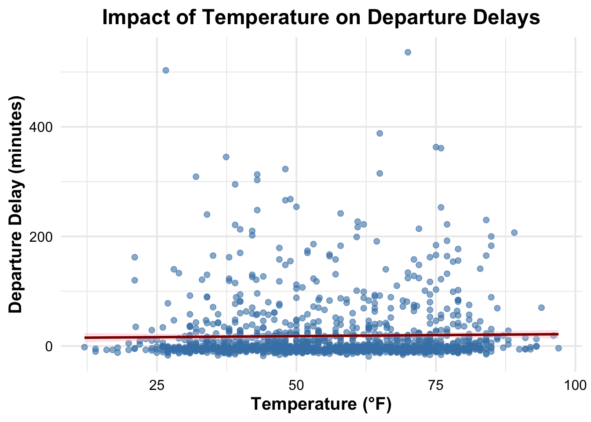

Regression analysis is a fundamental component of data analysis and statistical inference. Through this activity, I aim to:
Conceptually understand and describe the process of least squares regression.
Perform a linear regression with one or more predictor variables using the lm() function.
Evaluate the model’s fit by examining residuals and fitted values.
Use AIC (Akaike Information Criterion) to compare and select the best model among candidate models.
To achieve these objectives, I’ll analyze flight data from JFK for ExpressJet Airlines and local weather conditions, focusing on how various weather factors impact departure delays.
Since regression analysis is such a fundamental component of inferences, I thought it would be a good idea to try to work through a few more examples to give you some more practice.
For this we will use some data on flights into and out of Newark (EWR), JFK, and La Guardia airports in NYC metropolitan area.
summary(flights)
year month day dep_time sched_dep_time
Min. :2013 Min. : 1.000 Min. : 1.00 Min. : 1 Min. : 106
1st Qu.:2013 1st Qu.: 4.000 1st Qu.: 8.00 1st Qu.: 907 1st Qu.: 906
Median :2013 Median : 7.000 Median :16.00 Median :1401 Median :1359
Mean :2013 Mean : 6.549 Mean :15.71 Mean :1349 Mean :1344
3rd Qu.:2013 3rd Qu.:10.000 3rd Qu.:23.00 3rd Qu.:1744 3rd Qu.:1729
Max. :2013 Max. :12.000 Max. :31.00 Max. :2400 Max. :2359
NA's :8255
dep_delay arr_time sched_arr_time arr_delay
Min. : -43.00 Min. : 1 Min. : 1 Min. : -86.000
1st Qu.: -5.00 1st Qu.:1104 1st Qu.:1124 1st Qu.: -17.000
Median : -2.00 Median :1535 Median :1556 Median : -5.000
Mean : 12.64 Mean :1502 Mean :1536 Mean : 6.895
3rd Qu.: 11.00 3rd Qu.:1940 3rd Qu.:1945 3rd Qu.: 14.000
Max. :1301.00 Max. :2400 Max. :2359 Max. :1272.000
NA's :8255 NA's :8713 NA's :9430
carrier flight tailnum origin
Length:336776 Min. : 1 Length:336776 Length:336776
Class :character 1st Qu.: 553 Class :character Class :character
Mode :character Median :1496 Mode :character Mode :character
Mean :1972
3rd Qu.:3465
Max. :8500
dest air_time distance hour
Length:336776 Min. : 20.0 Min. : 17 Min. : 1.00
Class :character 1st Qu.: 82.0 1st Qu.: 502 1st Qu.: 9.00
Mode :character Median :129.0 Median : 872 Median :13.00
Mean :150.7 Mean :1040 Mean :13.18
3rd Qu.:192.0 3rd Qu.:1389 3rd Qu.:17.00
Max. :695.0 Max. :4983 Max. :23.00
NA's :9430
minute time_hour
Min. : 0.00 Min. :2013-01-01 05:00:00.00
1st Qu.: 8.00 1st Qu.:2013-04-04 13:00:00.00
Median :29.00 Median :2013-07-03 10:00:00.00
Mean :26.23 Mean :2013-07-03 05:22:54.64
3rd Qu.:44.00 3rd Qu.:2013-10-01 07:00:00.00
Max. :59.00 Max. :2013-12-31 23:00:00.00
We also have some data related to local weather conditions.
summary(weather)
origin year month day
Length:26115 Min. :2013 Min. : 1.000 Min. : 1.00
Class :character 1st Qu.:2013 1st Qu.: 4.000 1st Qu.: 8.00
Mode :character Median :2013 Median : 7.000 Median :16.00
Mean :2013 Mean : 6.504 Mean :15.68
3rd Qu.:2013 3rd Qu.: 9.000 3rd Qu.:23.00
Max. :2013 Max. :12.000 Max. :31.00
hour temp dewp humid
Min. : 0.00 Min. : 10.94 Min. :-9.94 Min. : 12.74
1st Qu.: 6.00 1st Qu.: 39.92 1st Qu.:26.06 1st Qu.: 47.05
Median :11.00 Median : 55.40 Median :42.08 Median : 61.79
Mean :11.49 Mean : 55.26 Mean :41.44 Mean : 62.53
3rd Qu.:17.00 3rd Qu.: 69.98 3rd Qu.:57.92 3rd Qu.: 78.79
Max. :23.00 Max. :100.04 Max. :78.08 Max. :100.00
NA's :1 NA's :1 NA's :1
wind_dir wind_speed wind_gust precip
Min. : 0.0 Min. : 0.000 Min. :16.11 Min. :0.000000
1st Qu.:120.0 1st Qu.: 6.905 1st Qu.:20.71 1st Qu.:0.000000
Median :220.0 Median : 10.357 Median :24.17 Median :0.000000
Mean :199.8 Mean : 10.518 Mean :25.49 Mean :0.004469
3rd Qu.:290.0 3rd Qu.: 13.809 3rd Qu.:28.77 3rd Qu.:0.000000
Max. :360.0 Max. :1048.361 Max. :66.75 Max. :1.210000
NA's :460 NA's :4 NA's :20778
pressure visib time_hour
Min. : 983.8 Min. : 0.000 Min. :2013-01-01 01:00:00.0
1st Qu.:1012.9 1st Qu.:10.000 1st Qu.:2013-04-01 21:30:00.0
Median :1017.6 Median :10.000 Median :2013-07-01 14:00:00.0
Mean :1017.9 Mean : 9.255 Mean :2013-07-01 18:26:37.7
3rd Qu.:1023.0 3rd Qu.:10.000 3rd Qu.:2013-09-30 13:00:00.0
Max. :1042.1 Max. :10.000 Max. :2013-12-30 18:00:00.0
NA's :2729
I’m going to make a synthetic data set consisting of flights out of JFK for the ExpressJet airlines. Since the weather data is on the hour, I also make a synthetic varible Month.Day.Hour so that I can join the weather data to this one.
What features of this data set may impact the departure delay for flights coming out of JFK on ExpressJet Airlines?
To understand the potential factors that affect departure delay, I’ll visualize the relationships between departure delays and various weather factors.
Exploring Factors Affecting Departure Delay
# Visualizing departure delays by temperatureggplot(df, aes(x = temp, y =`Departure Delay`)) +geom_point(color ="steelblue", alpha =0.6, size =2) +geom_smooth(method ="lm", color ="darkred", fill ="pink", linetype ="solid") +labs(title ="Impact of Temperature on Departure Delays",x ="Temperature (°F)",y ="Departure Delay (minutes)" ) +theme_minimal(base_size =15) +theme(plot.title =element_text(face ="bold", hjust =0.5),axis.title =element_text(face ="bold"),axis.text =element_text(color ="black") )
`geom_smooth()` using formula = 'y ~ x'
Warning: Removed 81 rows containing non-finite outside the scale range
(`stat_smooth()`).
Warning: Removed 81 rows containing missing values or values outside the scale range
(`geom_point()`).

Visualizing the Impact of Wind Speed
# Wind Speed vs. Departure Delayggplot(df, aes(x = wind_speed, y =`Departure Delay`, color = temp)) +geom_point(alpha =0.7, size =2) +geom_smooth(method ="lm", color ="black", linetype ="solid", size =1.5) +scale_color_viridis_c(option ="plasma", name ="Temp (°F)") +labs(title ="Impact of Wind Speed on Departure Delays",x ="Wind Speed (mph)",y ="Departure Delay (minutes)" ) +theme_classic(base_size =15) +theme(plot.title =element_text(face ="bold", hjust =0.5),legend.title =element_text(face ="bold"),legend.text =element_text(size =12) )
Warning: Using `size` aesthetic for lines was deprecated in ggplot2 3.4.0.
ℹ Please use `linewidth` instead.
`geom_smooth()` using formula = 'y ~ x'
Warning: Removed 83 rows containing non-finite outside the scale range
(`stat_smooth()`).
Warning: Removed 83 rows containing missing values or values outside the scale range
(`geom_point()`).
Visualizing Precipitation Effects
# Precipitation vs. Departure Delayggplot(df, aes(x = precip, y =`Departure Delay`)) +geom_point(color ="dodgerblue", alpha =0.6, size =2) +geom_smooth(method ="lm", color ="darkgreen", fill ="lightgreen") +labs(title ="Impact of Precipitation on Departure Delays",x ="Precipitation (inches)",y ="Departure Delay (minutes)" ) +annotate("text", x =0.35, y =300, label ="Heavy Rain\nHigher Delays", color ="red", size =4, fontface ="italic") +theme_minimal(base_size =13) +theme(plot.title =element_text(face ="bold", hjust =0.5))
`geom_smooth()` using formula = 'y ~ x'
Warning: Removed 81 rows containing non-finite outside the scale range
(`stat_smooth()`).
Warning: Removed 81 rows containing missing values or values outside the scale range
(`geom_point()`).
Regression Analysis
Step 1: Performing a Linear Regression
Using the lm() function, I fit a linear model with temperature, wind speed, and precipitation as predictors.
As I proceed with the linear regression, the least squares method is applied internally by the lm() function. This method works by finding the values for the intercept and coefficients that minimize the sum of squared differences between the observed values (in this case, the Departure Delay) and the predicted values generated by the model. Essentially, the goal is to minimize the residuals, or the differences between the actual data points and the model’s predictions. The beauty of the lm() function is that it handles this process automatically, so no additional steps are necessary to implement the least squares regression.
model <-lm(`Departure Delay`~ temp + wind_speed + precip, data = df)summary(model)
Call:
lm(formula = `Departure Delay` ~ temp + wind_speed + precip,
data = df)
Residuals:
Min 1Q Median 3Q Max
-97.39 -24.78 -19.00 -2.75 520.57
Coefficients:
Estimate Std. Error t value Pr(>|t|)
(Intercept) 3.09501 6.65853 0.465 0.6421
temp 0.12134 0.09186 1.321 0.1868
wind_speed 0.66858 0.27480 2.433 0.0151 *
precip 288.73873 72.58653 3.978 7.33e-05 ***
---
Signif. codes: 0 '***' 0.001 '**' 0.01 '*' 0.05 '.' 0.1 ' ' 1
Residual standard error: 55.67 on 1319 degrees of freedom
(83 observations deleted due to missingness)
Multiple R-squared: 0.0175, Adjusted R-squared: 0.01526
F-statistic: 7.83 on 3 and 1319 DF, p-value: 3.511e-05
Model Overview
The formula is: Departure Delay ~ temp + wind_speed + precip,
where:
Departure Delay is the dependent variable,
temp, wind_speed, and precip are the predictor variables.
Key Findings from the Output:
Residuals: The residuals (the differences between the observed and predicted values) range from -97.39 to 520.57, with a median residual of -19.00. The residuals suggest some large outliers in the data, which could potentially affect the model’s performance.
Coefficients:
Intercept: The intercept is 3.095, but it is not statistically significant (p-value = 0.6421), meaning it does not significantly differ from zero.
Temperature (temp): The coefficient for temperature is 0.12134, indicating that, on average, for every one-degree increase in temperature, the departure delay increases by about 0.12 minutes. However, this variable is not statistically significant (p-value = 0.1868), meaning it doesn’t have a strong effect on departure delays in this model.
Wind Speed (wind_speed): The coefficient for wind speed is 0.66858, indicating that for every one mph increase in wind speed, the departure delay increases by about 0.67 minutes. This variable is statistically significant (p-value = 0.0151), meaning there is a meaningful relationship between wind speed and departure delays.
Precipitation (precip): The coefficient for precipitation is 288.73873, suggesting that for each inch of precipitation, the departure delay increases by approximately 289 minutes. This variable is highly statistically significant (p-value = 7.33e-05), indicating a very strong relationship between precipitation and departure delays.
Model Fit:
Residual Standard Error: The residual standard error is 55.67, which represents the average size of the residuals. A large residual error suggests that the model’s predictions are, on average, off by 55.67 minutes.
R-squared: The R-squared value is 0.0175, which is quite low. This indicates that only 1.75% of the variance in departure delays is explained by the predictors (temp, wind_speed, and precip). This suggests that the model may not be capturing much of the variance in the data, and there might be other factors influencing departure delays that are not included in the model.
Adjusted R-squared: The adjusted R-squared is 0.01526, which also supports that the model is not a very strong fit.
F-statistic: The F-statistic is 7.83 with a p-value of 3.511e-05, which is statistically significant. This indicates that, at least collectively, the predictors (temp, wind_speed, and precip) have some predictive power regarding departure delays.
Interpretation:
Wind speed and precipitation have a statistically significant impact on departure delays, with wind speed increasing delays by about 0.67 minutes per mph, and precipitation increasing delays by about 289 minutes per inch of rain.
Temperature does not seem to have a significant effect on departure delays in this model.
Despite some significant predictors, the model has low explanatory power (low R-squared), suggesting that there are likely other variables influencing departure delays that are not included in the model.
Step 2: Evaluating Model Fit
plot(model, which =1) # Residuals vs Fitted
plot(model, which =2) # Q-Q plot
1.)
When I look at this Residuals vs Fitted plot, I’m trying to figure out how well my linear regression model is performing in predicting departure delays based on temperature, wind speed, and precipitation. The residuals, or errors, are plotted against the predicted values from my model.
I notice that most of the residuals are clustered around the lower predicted values, which is good—it means that, for the most part, my predictions are close to the actual values. However, the trend line tells me there might be some systematic deviations, meaning my model might not be perfectly capturing the relationships.
Also, I see a few outliers—specific points where my model’s predictions were way off. These outliers could be due to unusual cases or errors in the data, or they might indicate that I need to refine my model.
Overall, this plot is really useful because it shows me where my model is doing well and where it might need some improvement.
2.)
“When I look at this QQ plot of the residuals versus the theoretical quantiles, it helps me understand if my regression model’s residuals are normally distributed. Most of the points fall along the reference line, which is a good sign that the residuals are generally following a normal distribution. However, I do see some deviations, especially at the ends of the plot. These outliers (like 11170, 3820, 9380) suggest that some residuals aren’t fitting the normal distribution well, indicating potential issues.
Overall, this tells me that my model is performing fairly well, but there might be some unusual data points or heavier tails than expected. This means I might need to investigate further, possibly by looking into robust regression techniques or considering transformations for my variables to improve the fit.
Step 3: Model Selection Using AIC
Finally, I compare models using AIC to balance model complexity and fit.
model1 <-lm(`Departure Delay`~ temp + wind_speed, data = df)model2 <-lm(`Departure Delay`~ temp + precip, data = df)AIC(model, model1, model2)
Warning in AIC.default(model, model1, model2): models are not all fitted to the
same number of observations
Model is the most complex, using three predictors: temp, wind_speed, and precip.
Model1 uses two predictors: temp and wind_speed.
Model2 uses two predictors as well: temp and precip.
From the AIC results:
Model (with all three predictors) has an AIC of 14395.98.
Model1 (temp and wind_speed) has an AIC of 14409.76.
Model2 (temp and precip) has an AIC of 14420.13.
Interpretation:
The AIC values suggest that Model (which includes all three predictors) is the best fitting model, as it has the lowest AIC value (14395.98). The AIC penalizes models for including more predictors, so even though Model includes an extra predictor (precip), it still results in a lower AIC than the other two models. This indicates that the inclusion of precip in the model improves the fit enough to outweigh the penalty for adding an extra variable.
Between Model1 and Model2, Model1 (temp and wind_speed) has a slightly lower AIC than Model2 (temp and precip), meaning that wind_speed provides a slightly better explanatory power for Departure Delay than precip does, in this case.
In conclusion, I would choose Model as the best model based on AIC, as it offers the best balance between fit and complexity. However, Model1 is a good alternative if simplifying the model is important, as it performs better than Model2 according to AIC.
Reflection
Through this activity, I explored the principles of regression analysis, applied linear modeling to a real-world dataset, and critically evaluated model performance. This process deepened my understanding of regression and prepared me for more advanced modeling challenges.